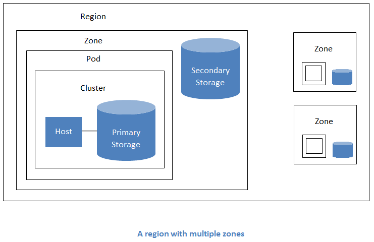

How to set up a private cloud for IaaS
Table of Contents
- 1. What are we going to learn today ??
- 2. What do you need ??
- 3. Introduction to Virtualization ??
- 3.1. What is Virtualization ??
- 3.2. What is without Virtualization ??
- 3.3. How does Virtulization make Life@DataCentres easy ??
- 3.4. Why Virtualization
- 3.5. Lets understand the difference
- 3.6. Hypervisors - Virtual Machine Monitors
- 3.7. Types of Virtualization
- 3.8. Examples Virtualization technologies
- 3.9. Problem Solved – No way
- 4. Introduction to Cloud Computing
- 4.1. What is Computing ??
- 4.2. What is Cloud ??
- 4.3. What it is not ??
- 4.4. What is Cloud Computing ??
- 4.5. What without Cloud computing ??
- 4.6. Advantages of Cloud computing ??
- 4.7. Three layers of Cloud Computing or three platforms of cloud computing
- 4.8. Well known Cloud service provider
- 4.9. Types of Cloud
- 5. Lets setup our own DropBox - OwnCloud
- 6. Setting up the Hybrid Cloud
- 7. Lets set our Enterprise Cloud
- 8. References
1 What are we going to learn today ??
- Basics of Virtualization and Cloud Computing
- Setting up our own Dropbox - The ownCloud
- Setting up our on Cloud service
2 What do you need ??
- System with atleast 4 GB RAM
- Ubuntu 14.04 OS
- Minimum 100 GB of Hard disk
- Basic knowledge working on Ubuntu 14.04 or any linux
- Editor like vim or vi or gedit
3 Introduction to Virtualization ??
3.1 What is Virtualization ??
Virtualization is a combination of software and hardware engineering that creates Virtual Machines (VMs) - an abstraction of the computer hardware that allows a single machine to act as if it where many machines.
3.2 What is without Virtualization ??

3.3 How does Virtulization make Life@DataCentres easy ??
3.4 Why Virtualization
- Reduced cost
- Easier backup and disaster recovery
- Efficient IT Operations
- Less Heat
- Easy migrations
- Run multiple difference OS on a single machine
3.5 Lets understand the difference

3.6 Hypervisors - Virtual Machine Monitors
The hypervisor (also called a virtual machine monitor) is the
low-level program that allows multiple operating systems to run
concurrently on a single host computer.

3.6.1 Type of hypervisor
- type 1 virtualization - Bare metal or Native Hypervisor
- type 2 virtualization - Hosted Hypervisor
| S.No | Bare Metal | OS level |
|---|---|---|
| 1 | Directly installed in Hardware | Installed and runs on host Operating System |
| 2 | The hypervisor is small as its main task is sharing and | OS manages the resource allocation |
| managing hardware resources between different operating systems. | ||
| 3 | A major advantage is that any problems in one virtual machine | Independent of VM |
| or guest operating system do not affect the other guest | ||
| operating systems running on the hypervisor. | ||
| 4 | Any issue in hypervisor will destroy the full VMs running in it | Any issue with OS will destroy all the VMs |
| hosted on it | ||
| 5 | Examples - VMware ESXi Server, Microsoft Hyper-V, | Examples VMware Workstation, Microsoft Virtual |
| Citrix/Xen Server | PC, Oracle Virtual Box |
3.7 Types of Virtualization
3.7.1 On the basis of activity
- Storage Virtualization
- Your hard disk partition
- Compute Virtualization
- Resource partition
- Network Virtualization
- Interfaces virtulization
3.7.2 On the basis of operational way
- VM based virtualization
- Container based Virtualization
3.8 Examples Virtualization technologies
- VM based virtualization
- Citrix, VM Ware, Oracle Virtual Box
- Container based Virtualization
- Docker, OpenVZ, LxC
3.9 Problem Solved – No way
4 Introduction to Cloud Computing
4.1 What is Computing ??
Computing is the process of manipulation/caculation. 2+2 is computating/computaiton. That's what computers do.
4.2 What is Cloud ??
"The Cloud" or "The Network Cloud" is an IT infrastrucuture sitting somewhere which contains compute resources like servers, storage, network, memory etc.
4.3 What it is not ??
4.4 What is Cloud Computing ??
Cloud computing is the delivery of computing services—servers, storage, databases, networking, software, analytics and more—over the Internet (“the cloud”).
4.5 What without Cloud computing ??
- No Google Drives
- No Dropbox, Instagram,
- Weak IT Operations -
4.6 Advantages of Cloud computing ??
4.7 Three layers of Cloud Computing or three platforms of cloud computing
4.7.1 IaaS - Infrastrucuture as a Service
- Cloud infrastructure services, known as Infrastructure as a Service (IaaS), are self-service models for accessing, monitoring, and managing remote datacenter infrastructures, such as compute (virtualized or bare metal), storage, networking, and networking services (e.g. firewalls).
- Instead of having to purchase hardware outright, users can purchase IaaS based on consumption, similar to electricity or other utility billing.
- Examples - AWS, Microsoft Azure, Digital Ocean
4.7.2 PaaS - Platform as a Service
- Platform as a service (PaaS) is a cloud computing model that delivers applications over the Internet.
- In a PaaS model, a cloud provider delivers hardware and software tools – usually those needed for application development – to its users as a service.
- A PaaS provider hosts the hardware and software on its own infrastructure. As a result, PaaS frees users from having to install in-house hardware and software to develop or run a new application.
- Examples - Appear IQ, Mendix, Amazon Web Services (AWS) Elastic Beanstalk, Google App Engine and Heroku.
4.7.3 SaaS - Software as a Service
- Cloud application services, SaaS uses the web to deliver applications that are managed by a third-party vendor and whose interface is accessed on the clients’ side.
- Most SaaS applications can be run directly from a web browser without any downloads or installations required, although some require plugins.
- SaaS Examples: Google Apps, Salesforce, Workday, Concur, Citrix GoToMeeting, Cisco WebEx
4.8 Well known Cloud service provider
- AWS - Amazon Web Services, Digital Ocean, Microsoft Azure, Google Cloud
4.9 Types of Cloud
- Public Cloud
- AWS, Digital Ocean, Microsoft Azure
- Private Cloud
- Enterprise Cloud
- Hybrid Cloud
- Mix of Public and private cloud
5 Lets setup our own DropBox - OwnCloud
- OwnCloud is a web application that can store and serve content from a centralized location, much like Dropbox.
- The difference is that ownCloud 7 allows you to host the serving software on your own machines, taking the trust issues out of putting your personal data someone else's server.
- Install OwnCloud on your local machine
cd /tmp wget http://download.opensuse.org/repositories/isv:ownCloud:community/xUbuntu_14.04/Release.key sudo apt-key add - < Release.key sudo sh -c "echo 'deb http://download.opensuse.org/repositories/isv:/ownCloud:/community/xUbuntu_14.04/ /' >> /etc/apt/sources.list.d/owncloud.list" sudo apt-get update sudo apt-get install owncloud -y sudo apt-get install mariadb-server -y
- Configure your mysql database
sudo mysql -u root -p CREATE DATABASE owncloud; GRANT ALL ON owncloud.* to 'owncloud'@'localhost' IDENTIFIED BY 'database_password'; exit
- Access
http://your-ip/owncloud
6 Setting up the Hybrid Cloud
6.1 What do you need ??
- Credit Card - Money
- Knowledge on using public cloud
- Decision on using one of the Public Cloud service provider.
- Active Internet connection.
6.2 A tour to Amazon Web Services
7 Lets set our Enterprise Cloud
7.1 What do we need ??
- A machine with below given configurations -
Operating system - Ubuntu 14.04 ( any Linux, recommended - Ubutnu 14.04 / CentOS 6.X or 7 ) RAM - Minimum of 4 GB, recommended 8 GB Hard disk - Minimum of 250 GB, recommended 500 GB Active Internet Connection
7.2 Available Options
7.2.1 Openstack
7.2.2 Apache Cloud stack
- Apache CloudStack is open source software designed to deploy and manage large networks of virtual machines, as a highly available, highly scalable Infrastructure as a Service (IaaS) cloud computing platform
- Users can manage their cloud with an easy to use Web interface, command line tools, and/or a full-featured RESTful API.
- CloudStack provides an API that's compatible with AWS EC2 and S3 for organizations that wish to deploy hybrid clouds.
7.2.3 Cloudstack Terminologies

- Regions
- A region is the largest available organizational unit within a CloudStack deployment.
- A region is made up of several availability zones, where each zone is roughly equivalent to a datacenter
- Zones
- A zone typically corresponds to a single datacenter, although it is permissible to have multiple zones in a datacenter.
- Pods
- A pod often represents a single rack.
- Clusters
- A cluster provides a way to gro
7.3 Installing Apache Cloudstack on Ubuntu 14.04
7.3.1 Setup and configure your virtual machine
- Create a Ubuntu 14.04 virtual machine in Oracle Virtual Box
- Setup the interface files
vim /etc/network/interfaces
- Write the following configuration in your /etc/network/interfaces file
auto lo iface lo intet loopback auto eth0 iface eth0 inet static address 192.168.56.10 netmask 255.255.255.0 auto eth1 iface eth1 inet dhcp - Turn off your your Virtual Machine
- Go to File–>Preferences–>Network–>Host only Networks
- Click on the + symbol and create a "Host only Adapter"
- Double click on the "host only Adapter" you created just now
- Give
IPv4 Address as - 192.168.56.1 Network Mask - 255.255.255.0
- Click Settings–>Network–>Adapter 1
- Select Host only Adapter from the Drop down and select your "Host Only Adapter" name.
- Select Adapter Type to "Paravirtualized Network"
- Allow Premiscuos mode
- Check on "Cable Connected"
- Click on "Adapter 2"
- Select NAT and click OK.
- Start your Virtual Machine
7.3.2 Install necessary packages
- Update sources list
sudo apt-get update
- Add source repository to sources list
sudo vim /etc/apt/sources.list.d/cloudstack.list
- Write the deb package URL in this file
deb http://cloudstack.apt-get.eu/ubuntu precise 4.4
- Become root user
sudo su -
- Download the sources using wget command
wget -O - http://cloudstack.apt-get.eu/release.asc | apt-key add -
- Update
apt-get update
- Install Cloudstack management
apt-get install cloudstack-management
- Install MySQL server
apt-get install mysql-server
- Open file /etc/mysql/my.cnf
[mysqld] innodb_rollback_on_timeout=1 innodb_lock_wait_timeout=600 max_connection=350 log-bin=mysql-bin binlog-format = 'ROW'
- Restart mysql service
service mysql restart
- Configure mysql
mysql_secure_installation
- Setup the Cloudstack database
cloudstack-setup-databases cloud:<your-password>@localhost --deploy-as=root:<your-password> -i 192.168.56.10
- Run cloudstack management
sudo cloudstack-setup-management
7.3.3 Setitng up Storage NFS
- Create directory
sudo mkdir -p /export/primary sudo mkdir -p /export/secondary
- Install NFS-Kernel-server
sudo apt-get install nfs-kernel-server
- Open file /etc/exports
sudo vim /etc/exports /export *(rw,async,no_root_squash,no_subtree_check)
- Install NFS common
sudo apt-get install nfs-common
- Comfigure nfs-common
sudo vim /etc/default/nfs-common STATDOPTS="--port 662 --outgoing-port 2020 NEED_STATD=yes
- Configure modprob lock
sudo vim /etc/modprobe.d/lockd.conf options lockd nlm_udpport=32769 nlm_tcpport=32803
- Restart NFS service
service nfs-kernel-server restart
- Check your mounts using show mount
showmount -e 127.0.0.1
- Create directories in mnt
sudo mkdir -p /mnt/primary sudo mkdir -p /mnt/secondary
- Add mount points in /etc/fstab
sudo vim /etc/fstab
- Add the following lines
192.168.56.10:/export/primary /mnt/primary nfs rsize=8192,timeo=14,intr,vers=3,noauto 0 2 192.168.56.10:/export/secondary /mnt/secondary nfs rsize=8192,timeo=14,intr,vers=3,noauto 0 2
- Mount the folder/partitions
sudo mount /mnt/primary sudo mount /mnt/secondary
7.3.4 Initiate a KVM image in storage
- Configure cloudstack to point to the storage space and download one
sudo /usr/share/cloudstack-common/scripts/storage/secondary/cloud-install-sys-tmplt -m /mnt/secondary -u http://cloudstack.apt-get.eu/systemvm/4.4/systemvm64template-4.4.1-7-kvm.qcow2.bz2 -h kvm -F
- Start cloudstck service
sudo service cloudstack-management start
7.3.5 Access Cloudstack GUI and install
- Access cloudstack GUI using Web browser
URL - http://<your-ip>:8080/client
- Provide username and password default is (admin,password)
- Change your password
- Add Zone
Name : czone DNS 1 : 192.168.56.1 Internal DNS 1 : 192.168.56.1
- Add Pod
Name : cpod Gateway : 192.168.56.1 Netmask 255.255.255.0 IP Range - 192.168.56.160 to 192.168.56.169
- Add guest network
Gateway : 192.168.56.1 Netmask : 255.255.255.0 IP Range : 192.168.56.170 to 192.168.56.230
- Add Cluster
Hypervisor : KVM Name : ccluster
- Add host
Name : csmgmt Username : root Password :
- Add Primary storage
Name : cprimary Protocol : NFS Scope : Cluster Server : 192.168.56.10 Path : /export/primary
- Add Secondary storage
NFS Server : 192.168.56.10 Provider : NFS Path : /export/secondary
- Click Launch
7.3.6 Install Cloudstack agent
sudo apt-get install cloudstack-agent
7.3.7 Install and configure KVM
- Installation
sudo apt-get install qemu-kvm
- Configure
sudo vim /etc/libvirt/qemu.conf Uncomment <vmc_listen = "0.0.0.0">
sudo vim /etc/libvirt/libvirtd.conf Uncomment <listen_tls = 0> Uncomment <listen_tcp = 1> tcp_port = "16509" mdns_adv = 0 auth_tcp = "none"
sudo vim /etc/default/libvirt-bin libvirtd_opts="-d -l"
sudo ln -s /etc/apparmor.d/usr.sbin.libvirtd /etc/apparmor.d/disable/ sudo ln -s /etc/apparmor.d/usr.lib.libvirt.virt-aa-helper /etc/apparmor.d/disable/
sudo apparmor_parser -R /etc/apparmor.d/usr.sbin.libvirtd sudo apparmor_parser -R /etc/apparmor.d/usr.lib.libvirt.virt-aa-helper
- Restart libvirt service
sudo service libvirt-bin restart
sudo ufw allow proto tcp from any to any port 22 sudo ufw allow proto tcp from any to any port 1798 sudo ufw allow proto tcp from any to any port 16509 sudo ufw allow proto tcp from any to any port 5900:6100 sudo ufw allow proto tcp from any to any port 49152:49216
- Reboot your machine